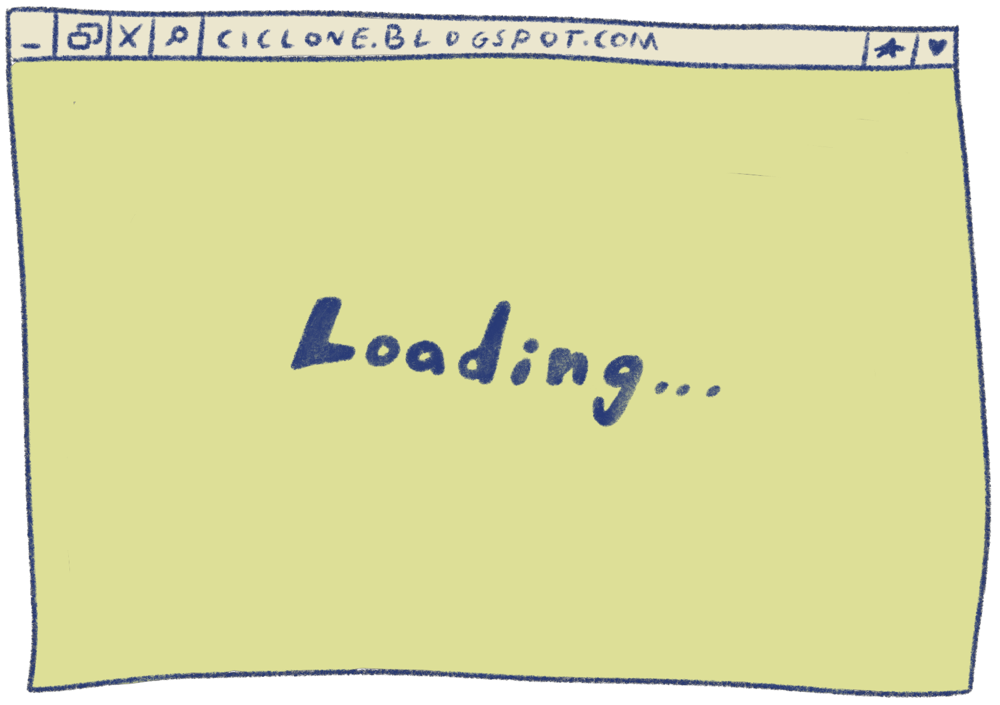
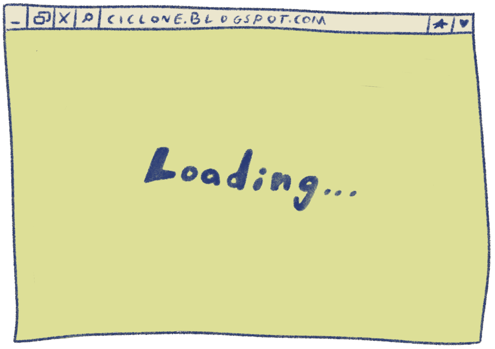

Bernardo
Page under construction
Decidi criar um blogue.
Um blogue que fosse, tipo, um diário, mas aberto para o mundo inteiro.
Sem aquela coisa pirosa do papel que cheira bem e da caneta especial.
O digital é o autêntico: what you get is what you see.
Na verdade, nunca tive um diário. Aquela ideia de estar a escrever só para mim nunca me agradou. Acho que não tem interesse nenhum.
Um blogue é completamente diferente. Um blogue existe para dar a ver a vida de uma pessoa. E para isso só é preciso wi-fi.
Vai chamar-se ciclone ponto blogspot ponto com.
 
